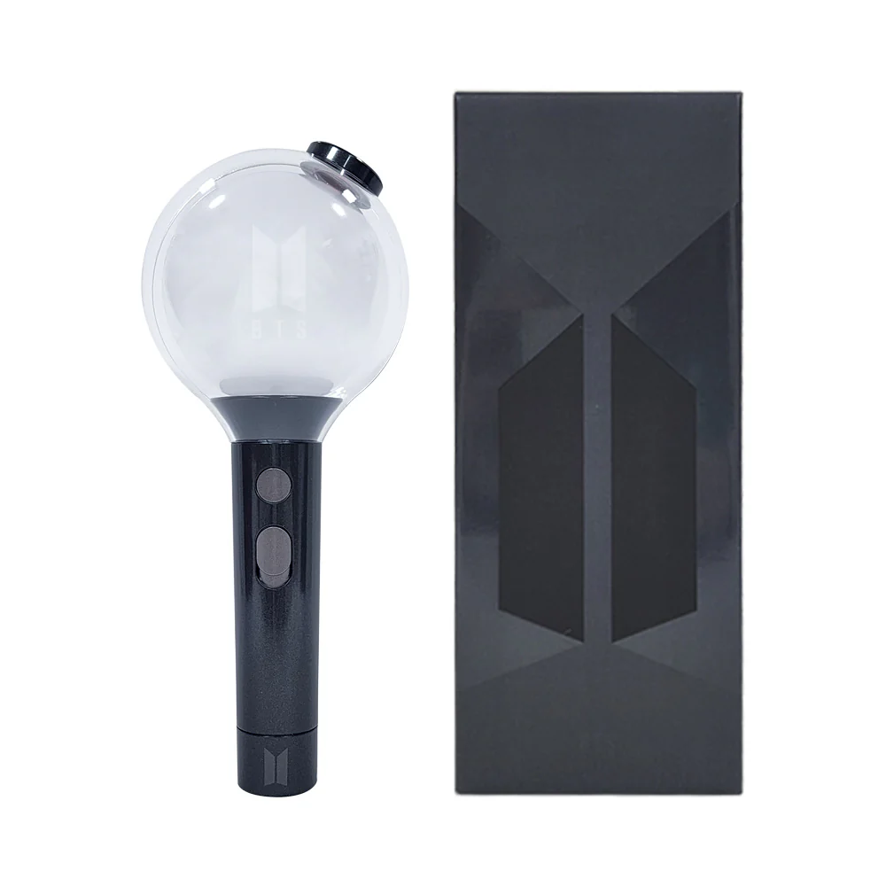
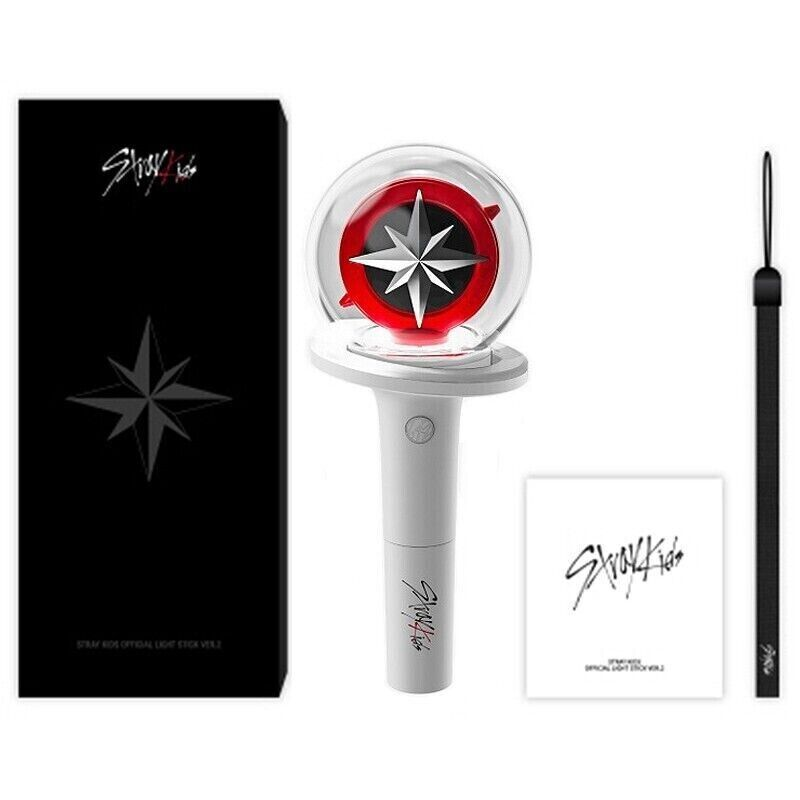

DICTIONARY
New to K-Pop and trying to figure out what all these different terms mean? Here is a handy dictionary just for that!
A | B | C | D | E | F | G | H | I | J | K | L | M | N | O | P | Q | R | S | T | U | V | W | X | Y | Z
A
- Aegyo – acting overly cute and innocent, usually to charm fans
- Akgae – The shortened form of “akseong gaeinpaen” (악성개인팬), which means “malicious individual fan” in Korean. An akgae is a dedicated fan of only one member of a group who often manipulates and perpetuates narratives about how their favorite member has been wronged, works to rally other people to their cause, hopes the member leaves the group to launch their own solo career, and openly degrades the other members of the group. Synonymous with solo stan.
- All-kill – the term used to describe when a song tops all four music charts in Korea
B
- Bias – a fan’s favorite member
- Bias-wrecker – the member that has a fan’s attention and is said to “wreck” their choice of bias
- Bonsang – Major Prize. Can have more than one winner.
C
- Center – the member that is in the center/middle position in a choreography formation during choruses.
- Comeback – when an existing artist returns from an absence with new music
- Concept – a particular theme for a debut/comeback. Common concepts include cute, dark, girl crush, and elegant.
- Cube – a South Korean entertainment company. Some of their artists include:
- I-DLE
- Pentagon
- BTOB
D
- Daebak – meaning awesome or cool, expressing excitement and happiness
- Daesang – Grand Prize. Only one group or individual can win it.
- Dance Line – all members of the group that are considered the dancers
- Ddaeng – An onomatopoeic word that emulates the sound of a “bell” that is comparable to “ding” in English, “ddaeng” often is used to represent a wrong answer.
- Debut– when a new artist formally releases music for the first time
- Disband – when a group ceases to (doesn't) work together anymore
- Dongsaeng – synonymous with younger sibling and used to describe someone younger
E
- Ending Fairy – the last pose or expression captured on camera after a performance

Jungkook ending fairy

Hyunjin ending fairy
F
- Face of the Group – the member of a group that is the most often seen and associated with the group, treated like a representative of the entire group.
- Fanchat – a chant that fans do during a performance. Fanchants can be as simple as listing the members’ names or something the companies create that are unique for particular songs.
- Fansign – an event where fans get the opportunity to meet idols. In-person fansigns give fans the chance to have things signed as well as gift things to the idols.
G
- Gayo – pop music, which includes K-Pop, trot, and international pop
- Generation (Gen.) – a period of time defined by certain characteristics that idols are assigned to at debut. The exact dates for each generation are debated, but below are the generally accepted ranges for each.
- 1st Gen – 1996 – 2002
- 2nd Gen – 2003 – 2011
- 3rd Gen – 2012 – 2017
- 4th Gen – 2018 – 2022/early 2023
- 5th Gen – March 2023 – present
H
- Honorifics – a title or word implying or expressing high status, politeness, or respect.
- Hubae (Hoobae) – meaning “junior” within a certain circumstance. IE: idols that have been in the industry longer than newer idols would refer to the latter as hubae. Antonymous with sunbae.
- HYBE (formerly Big Hit Entertainment) – a South Korean multinational entertainment company. Most artists under HYBE are associated with subsidiary labels. Some of these artists include:
- BTS & TXT (Big Hit Music)
- Enhypen (Belift Lab)
- Seventeen (Pledis)
- Le Sserafim (Source Music)
- BOYNEXTDOOR (KOZ Entertainment)
- Hyung – the honorific title that younger males give older males. Synonymous with older brother.
I
- Idol – male or female signed under an entertainment agency and who has gone through years of training to become an artist
J
- JYP (the person) – Park Jin-young, also known by his stage names J. Y. Park and The Asiansoul or the initials JYP, is a South Korean singer-songwriter, record producer, record executive, and reality television show judge. He is best known for founding the company JYP Entertainment.
- JYP (the company)– a South Korean multinational entertainment and record label conglomerate. Some of their artists include:
- Stray Kids
- Twice
- Itzy
- JYP (the person)
K
- Koreaboo – a non-Korean who is obsessed with Korean culture to the point they behave as if they are Korean. They are also frequently incorrect about the culture they wish to emulate. It is also the name of a K-culture news site.
L
- Leader – the member of the group who is given the most responsibility for and over the group. Example leaders are RM from BTS, Bangchan from SKZ, and Jungwon from EN-.
- Lightstick – a branded piece of merchandise that lights up, often seen at concerts and other performances

BTS Lightstick

Stray Kids Lightstick
M
- Maknae – the person who is the youngest
- MD – acronym for merchandise
- Multistan – a fan who supports and follows multiple groups with similar levels of attention
- MV – acronym for music video
N
- Netizen – citizen of the internet
- K-Netz (Knetz) – Korean citizens of the internet
- C-Netz (Cnetz) – Chinese citizens of the internet
- Nim – equivalent to Mr./Miss/Mrs. and used following an individual’s name to show respect (ie Bang PD-nim). More respectful than using ssi.
- Noona – the honorific title that younger males give older females. Synonymous with older sister.
- Nugu – unknown/unpopular. Often used to describe less popular artists or songs
O
- Oppa – the honorific title that younger females give older males. Synonymous with older brother.
- OST – acronym for original soundtrack. Idols commonly do OSTs for K-Dramas.
P
- Photobook – a book with a collection of photos that comes with an album. The photos correspond with the album’s concept(s).
- Photocard – a piece of merchandise that is a small card with a photo of a particular idol. They are popular collectibles for fans.
- Positions – the different roles a member of a group has, including vocal, dance, rap, center, visual, and leader. Positions are also in a hierarchy of main, lead, and sub which dictates the frequency of which the member is in that role.

Q
R
- Rap Line – all members of the group that are considered the rappers
- RBW – a South Korean record label and entertainment agency. They manage the following artists:
- MAMAMOO
- Purple Kiss
- Rookie – new artists in the industry. Rookies are labeled as such for at least 2 years from their debut.
S
- Saranghae– “I love you”
- Sasaeng – a stalker who obsesses over celebrities to the point of invading their privacy
- Satoori – Korean regional dialects.
- Selca – a picture taken of one’s self. Synonymous with selfie
- Skinship – physical touch between people
- SM – short for SM Entertainment, a South Korean record label and entertainment agency. Some of their artists include:
- aespa
- EXO
- Ssi – equivalent to Mr./Miss/Mrs. and used following an individuals name to show respect (ie Jimin-ssi)
- Starship – a South Korean entertainment company. Some of their artists include:
- IVE
- Monsta X
- Sunbae (Seonbae) – meaning “senior” within a certain circumstance. IE: idols that have been in the industry longer than newer idols would be referred to as sunbae. Antonymous with hubae.
T
- Trainee – pre-debut idols that are training for their debut
- Trendjack – when a group takes over a trending topic/hashtag on Twitter. For K-Pop, this is often done when fans of a certain group take over a trend/hashtag that was originally derogatory towards the group.
U
- Unni – the honorific title that younger females give older females. Synonymous with older sister.
V
- Visual – the member(s) who are decided as the most attractive by fitting with Korea’s beauty standards
- Vocal Line – all members of the group that are considered the vocalists.
W
X
Y
- YG – a South Korean multinational entertainment agency. Some of their artists include
- Blackpink
- BIGBANG
- 2NE1 (former)
Z
Want to know more about K-pop? Sign-In